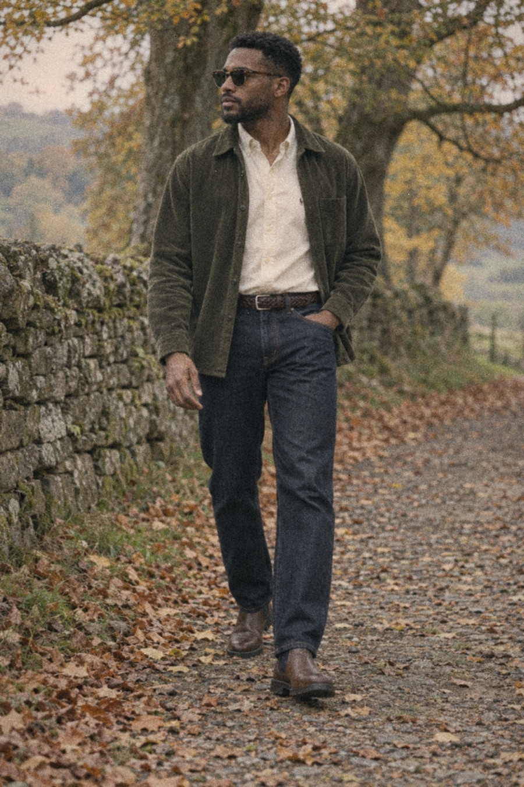
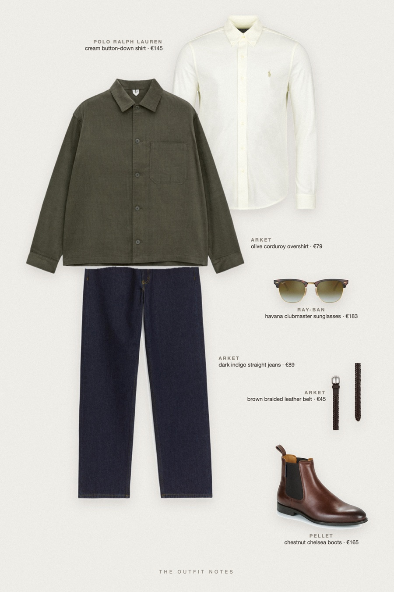

Olive Lane
corduroy overshirt for a country walk


An easy fall outfit for men that stays sharp off the clock. ARKET olive corduroy overshirt over a Polo Ralph Lauren cream oxford shirt, ARKET dark indigo loose straight jeans, Pellet chestnut Chelsea boots, a braided leather belt and Ray-Ban Clubmaster sunglasses. Smart casual men's style for country weekends.
The pieces
This page contains affiliate links: if you buy through them, we may earn a commission at no extra cost to you. Disclosure.
 ARKET
ARKET
Olive corduroy overshirt
Shop Polo Ralph Lauren
Polo Ralph Lauren
Cream button-down shirt
Shop ARKET
ARKET
Dark indigo straight jeans
Shop Pellet
Pellet
Chestnut chelsea boots
Shop ARKET
ARKET
Brown braided leather belt
Shop Ray-Ban
Ray-Ban
Havana clubmaster sunglasses
Shop
Prices are indicative, taken when the look was published, and may have changed. Pictures of the outfit are AI-generated illustrations of real products; the product photos are the retailers' own.
Published 1 October 2026.